Doručak
Slani i slatki uštipci, omleti, jaja sa tartufatom i pršutom i sendviči u hlebu iz pica peći.
Pizza bar i restoran na Voždovcu. Od jutarnje kafe do kasne večere.
Pashe pizza: maskarpone, mocarela, dimljeni sir, suvi vrat i sos od maline.
Pizza bar i restoran na Voždovcu. Od jutarnje kafe do kasne večere.
Maskarpone.
Mocarela.
Dimljeni sir.
Suvi vrat.
I malo maline.
Da, maline.
Naša pica sa potpisom. Slatko, slano i dimljeno u istom zalogaju.
Od jutarnje kafe do kasne večere, Pashé radi ceo dan. Svratite kad vam odgovara.
Slani i slatki uštipci, omleti, jaja sa tartufatom i pršutom i sendviči u hlebu iz pica peći.
Kapućino u šoljici sa našim potpisom, točeno pivo, vino i kokteli za duže sedenje.
Paste, rižota, wok, riba, meso i 14 vrsta pice. Ima i posnih jela.
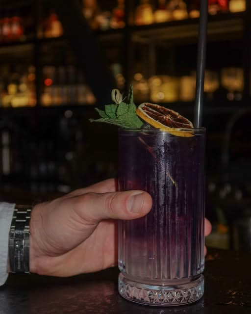
Kokteli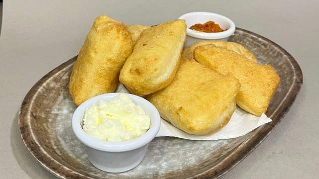
Uštipci, 08:00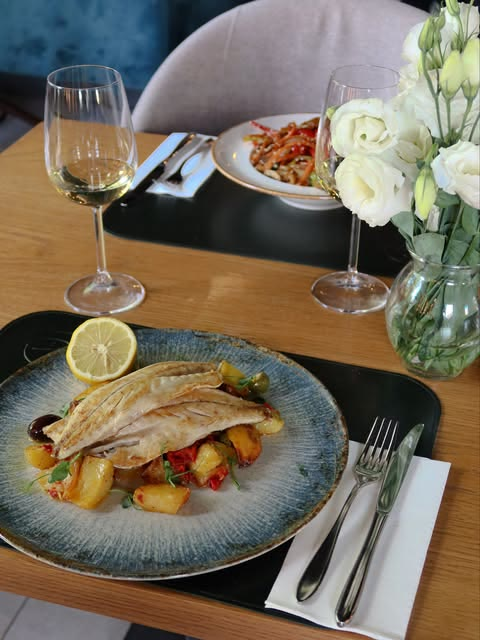
Ručak uz vino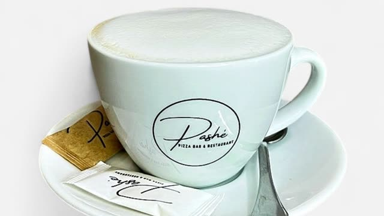
Kapućino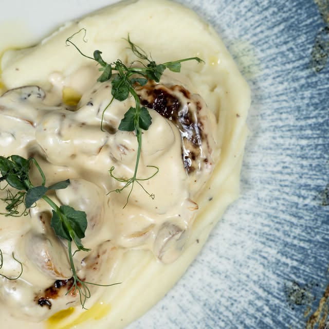
Njoke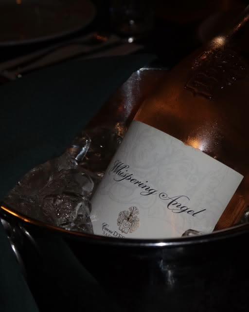
Roze na ledu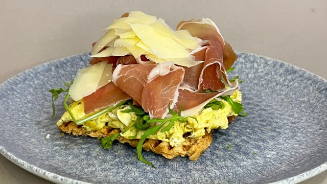
Jaja i tartufata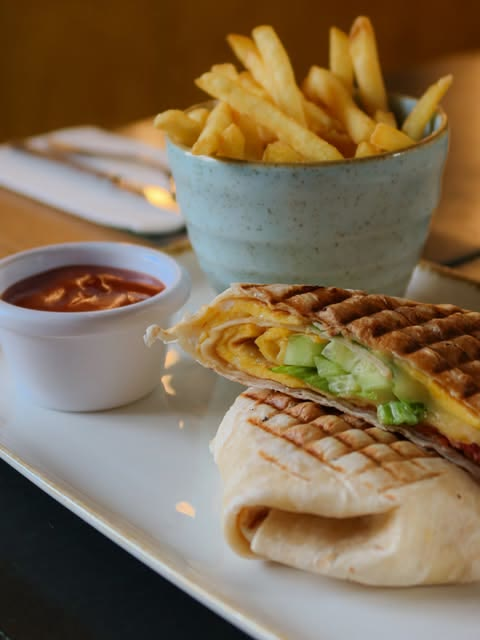
Cezar wrap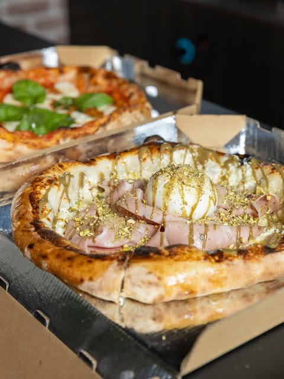
Za poneti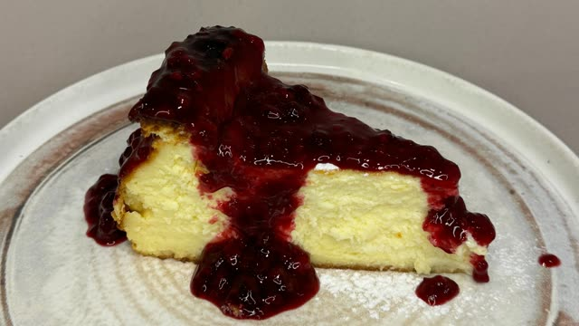
CheesecakeMaskarpone, mocarela, dimljeni sir, suvi vrat i sos od maline
Pelat, mocarela, parmezan, bosiljak
Pelat, mocarela, šunka, šampinjoni, masline
Mortadela, rikota, mocarela, pistać
Mortadela, pistać, rikota, mocarela, burata
Mocarela, parmezan, gauda, gorgonzola
Pelat, pikantna salama, sveža ljuta paprika, parmezan
Pelat, dimljeni sir, pikantna salama, jalapeño, parmezan
Gorgonzola, mocarela, pančeta, lešnik, bosiljak
Pelat, mocarela, šunka, kulen, pančeta, suvi vrat, Alfredo sos
Pelat, mocarela, suvi vrat, gorgonzola, paradajz, domaći pesto sos
Pelat, rikota, šunka, šampinjoni, parmezan, čeri paradajz, rukola
Pelat, mocarela, rukola, pršuta, parmezan, čeri
Rikota, mocarela, pršuta, pesto sos, parmezan, burata, čeri paradajz
Kajmak, ajvar
Nutela, džem od kajsije
Prilog feta i čeri paradajz
Sa fetom i čeri paradajzom
Paprika, šampinjoni, tikvice, patlidžan, mocarela, čeri
Sa guanciale slaninom, parmezanom i kremastim sosom
Rolovan, punjen čedar sirom, šunkom, sirnim namazom sa vlašcem i baby spanaćem
Sa spanaćem i brokolijem
Omlet sa tartufatom, pršutom i rukolom na tost hlebu
Jaja na oko sa roštiljskom kobasicom, kajmakom, senfom, čeri paradajzom i fetom
Jaja, šunka, sos od dimljenog sira, hrskava slanina, baby spanać
Hleb iz pica peći, šunka, sirni namaz, gauda, krastavac, zeleni miks
Hleb iz pica peći, pršuta, mocarela, pesto, paradajz, rukola
Hleb iz pica peći, mortadela, pistaći, mocarela, čeri paradajz
Hleb iz pica peći, tunjevina, miks zelenih salata, kukuruz, crveni luk
Korpa hleba
Pica testo sa svežim ruzmarinom, morskom solju i maslinovim uljem
Pica testo sa svežim ruzmarinom, morskom solju i maslinovim uljem
Plavi patlidžan, mocarela, parmezan, bosiljak, napolitanski sos
Burata, rukola, čeri paradajz i pesto
Pršuta, pikantna salama, mortadela, suvi vrat, gorgonzola, parmezan, grana padano, gauda, orah, kapar i masline
Juneći biftek, puter, paradajz, kiseli krastavac, crveni luk i tost hleb
Guanciale, parmezan, pekorino, jaje
Bolonjski ragu od 100% junećeg mesa u paradajz sosu
Domaće njoke u sosu od 4 sira, zapečene u pica peći
Biftek, tartufata, puter, rukola, pinjoli, crni i beli luk
Pileći file, baby spanać, gorgonzola, parmezan
Komadići bifteka u sosu od vrganja
Tikvice, paradajz, paprika, šargarepa, plavi patlidžan, šampinjoni
Sporo pečena teletina sa domaćim krompirom, brokolijem i šargarepom
U sosu od pečuraka i dimljenog sira, sa hrskavim dolar krompirićima
Na pire krompiru, u sosu od šampinjona i dimljenog sira
Pileći file punjen kajmakom, šunkom i gaudom, sa crvenom paprikom i palentom
Grilovan, na zapečenim njokama sa sušenim paradajzom
Pohovani pileći file sa kikiriki sosom i pomfritom
Pileći file, kajmak, tartar sos, pomfrit
100% juneći ćevapi 300 g, kajmak, crveni luk, ljuta paprika
100% juneće meso sa pančetom, dimljenim sirom i kajmakom, na lepinji, sa pomfritom
100% juneće meso, čedar, paradajz, džem od luka, ajsberg, burger i BBQ dresing, pomfrit
Pileće meso, gauda, paradajz, ajsberg, cezar dresing, pomfrit
Pileći file, pančeta, ajsberg, parmezan, cezar dresing, pomfrit
Svinjska rebra sa pečenim krompirom
Laks kare na pire krompiru, u natur sosu sa kaprom
Na njokama, sa sosom od sušenog paradajza
U sosu od 3 vrste pečuraka, sa domaćim krompirom i kajmakom
Juneći biftek, povrće, soja sos i susam, na pirinču
Pileći file, povrće, soja sos i susam, na pirinču
Povrće, brokoli, soja sos i susam, na pirinču
Grilovane, sa baby spanaćem i krompirom
Na grilovanom povrću
Na krompiru sa belim lukom, crvenom paprikom i kaprom
Grilovana tuna 300 g, baby spanać, šargarepa, čeri paradajz, kalamata masline, bosiljak
Pileći file, pančeta, krutoni, parmezan, ajsberg, cezar dresing
Paradajz, mocarela, pesto, bosiljak, pileći file
Biftek, miks zelenih salata, šargarepa, paprika, krastavac, susam, thai dresing
Grilovana sveža tuna 150 g, miks zelenih salata, čeri, maslinovo ulje i limunov sok
Losos, miks zelenih salata, krastavac, paprika, čeri, crveni luk, salsa verde
Sa prelivom od šumskog voća
Sa prelivom od bele čokolade
„Hrana je odlična. Preporučujem teletinu sa povrćem.“
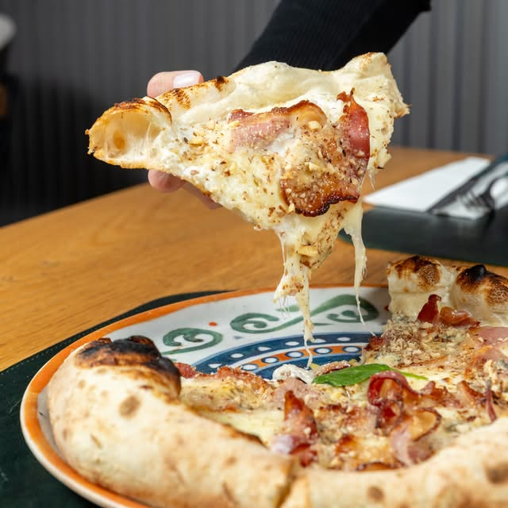
Ovo parče„Ono što me vraća jeste ukusna hrana, prijatna atmosfera i ljubazno osoblje. Preporučujem sve pice i burger u pica testu.“
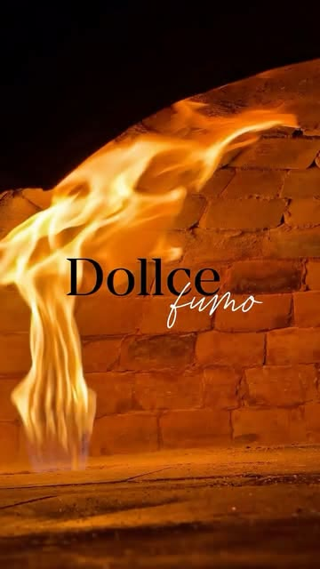
Pica peć„Osoblje je jako ljubazno. Hrana je baš ukusna i raznovrsna. Enterijer je lep. Imaju i terasu.“
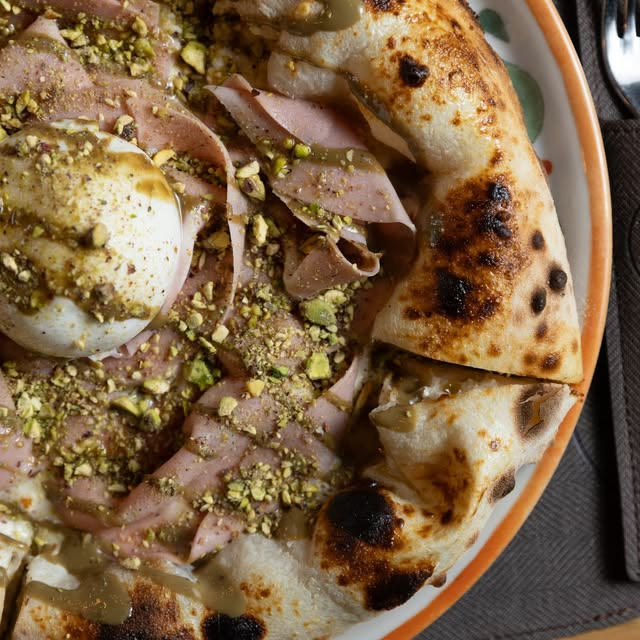
Mortadela pistać„Jako lep ambijent i sjajna usluga (pozdrav za Petra konobara)!“
Plišane klupe, zid od cigle, vino na policama i terasa za toplije dane. Lokal se uveče brzo popuni, zato je bolje da rezervišete sto.
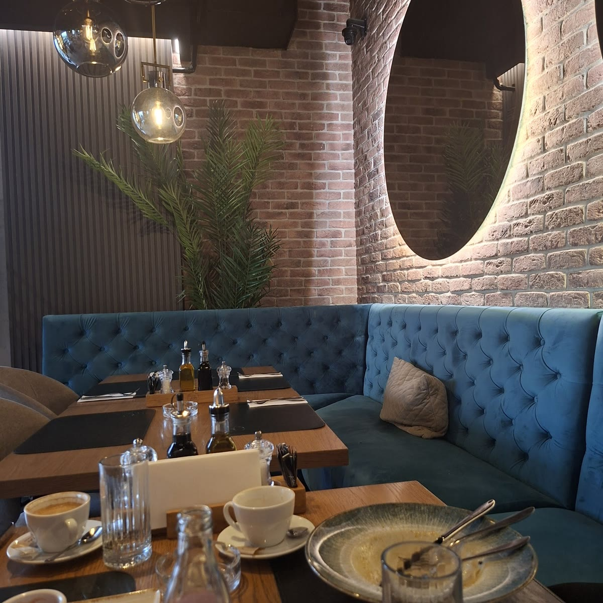
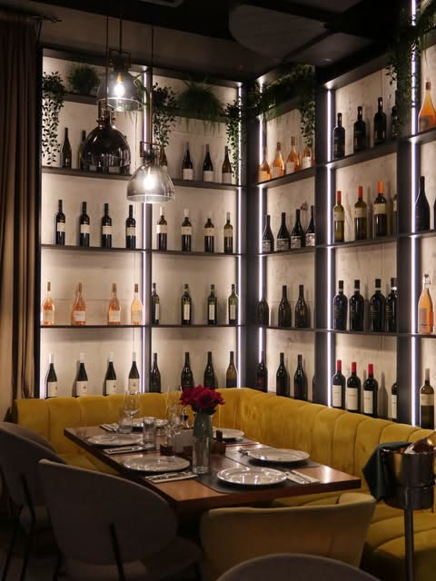
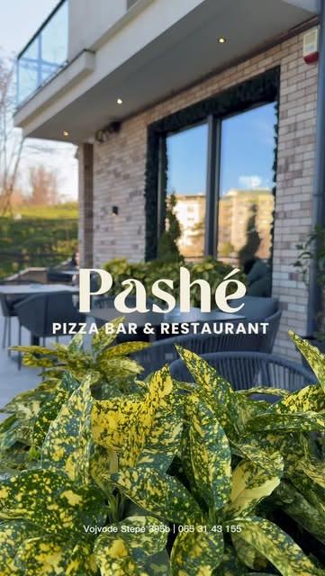
Nešto drugo vas zanima? Pozovite nas na 065 314 3155.
Preporučujemo. Lokal je mali i uveče se brzo popuni. Pozovite nas na 065 314 3155 i sačuvaćemo vam sto.
Svaki dan od 08:00 do ponoći. Petkom i subotom do 01:00.
Imamo, preko Wolt-a. Dostava radi svaki dan od 09:00 do 21:30.
Na ulici kod lokala, parking je besplatan.
Možete. Pashé je pet friendly.
Imamo. Rižoto i wok sa povrćem, salate sa tunom i lososom, brancin, sendvič sa tunjevinom i pitu sa višnjom.